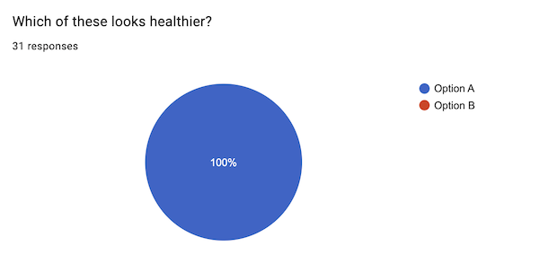
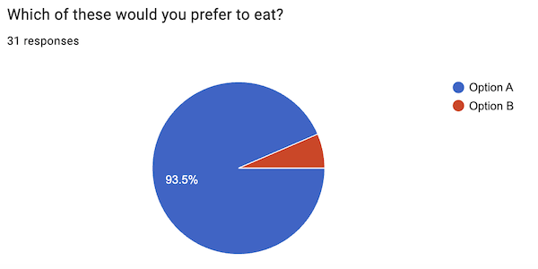
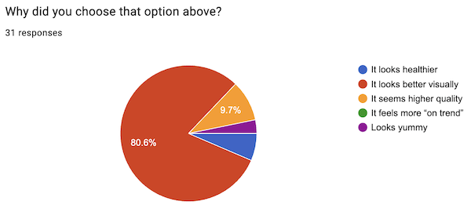
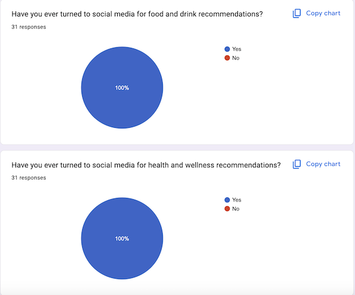

Data, Findings & Analysis
Provide details about how you conducted your survey:
The survey results showed a clear relationship between visual presentation and how people define “healthy.” Respondents consistently chose the more aesthetic option as both healthier and more appealing, even when the food itself was nearly identical. The findings also showed that social media plays a major role in shaping how users discover food and wellness content, reinforcing the idea that visual trends strongly influence perception.

Every respondent selected Option A as the healthier choice, showing a unanimous preference for the more visually curated version. This suggests that presentation alone can strongly shape perceptions of health, even before ingredients or nutrition are considered. The result highlights how aesthetics influence what people assume is “better for you.”

93.5% of respondents said they would rather eat Option A, the more aesthetic version of the meal. This shows that visual appeal does not just shape health perception, but also directly affects desirability. In other words, people are more likely to choose food that looks visually polished, even when the actual difference may be minimal.

When asked why they chose their preferred option, 80.6% of respondents said it was because it looked better visually. Very few respondents selected reasons tied to actual nutrition or ingredients. This suggests that many people rely on visual cues like styling, color, and presentation to judge health, often using appearance as a shortcut for quality.

100% of respondents said they have turned to social media for both food/drink and health/wellness recommendations. This reinforces how heavily users rely on platforms like TikTok and Instagram to guide what they eat and how they define wellness. Social media is not just influencing trends, but actively shaping everyday health decisions.
Highlight the most important takeaways from your survey data:
"When people are using whole foods, but also when it gives a clean or simple vibe I get the feeling of cleaner ingredients."
"Visually appealing/aesthetic looking, whole foods, home cooked or purchases from a "earthy/healthy" company (ex: CAVA is healthy in my head, and their storefronts and bowls have a healthy aesthetic)"
"If it's visually aesthetic, has lots of greens in it, and the food is simple ingredients"
If applicable, provide statistical analysis of your data:
What are the limitations of your survey data?